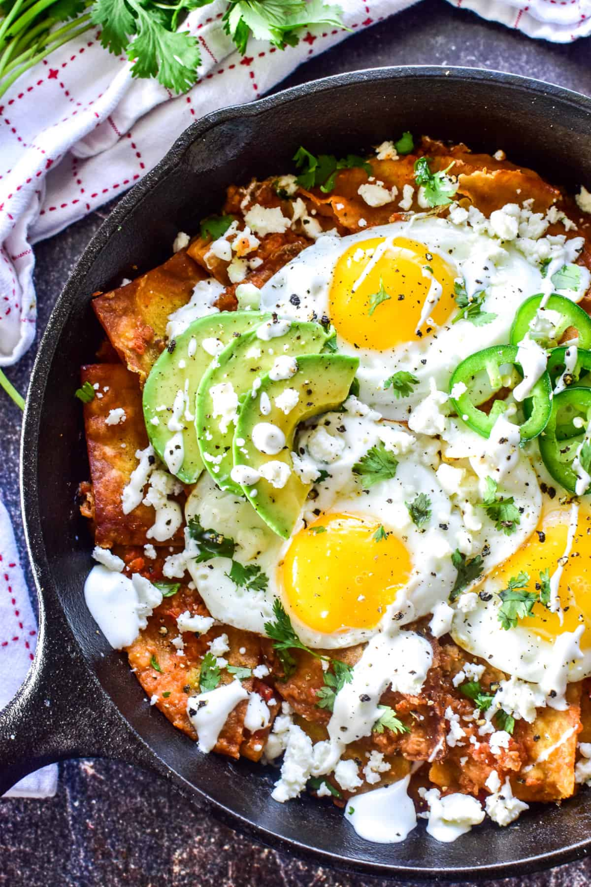

Fry an egg, melt the cheese, and warm your tortilla all in the same pan. Add your favorite toppings-like salsa, jalapeño pepper slices, cilantro, and green onions-and enjoy a great tasting breakfast, done in a flash. Of course, you can repeat, as many times as you like if you have company.
Prep Time: 5 mins
Cook Time: 4 mins
Total Time: 9 mins
Ingredients
- 2 teaspoons butter
- 1 large egg
- 1/4 teaspoon taco seasoning, or to taste
- 1 1/2 ounces shredded Cheddar cheese, divided
- 1 (6 to 7-inch) flour tortilla